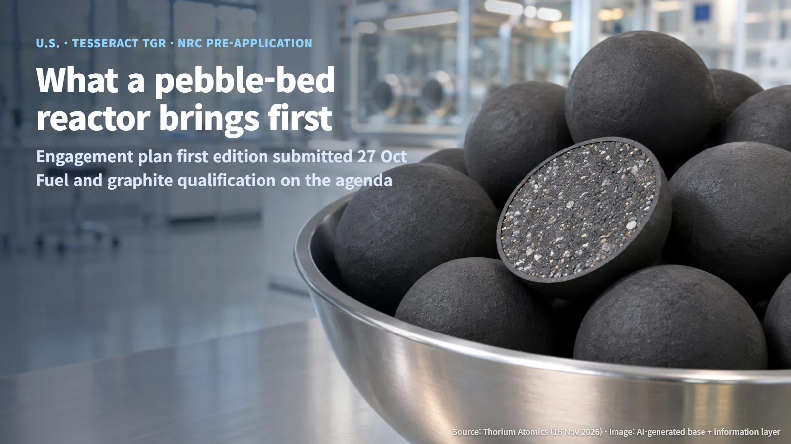
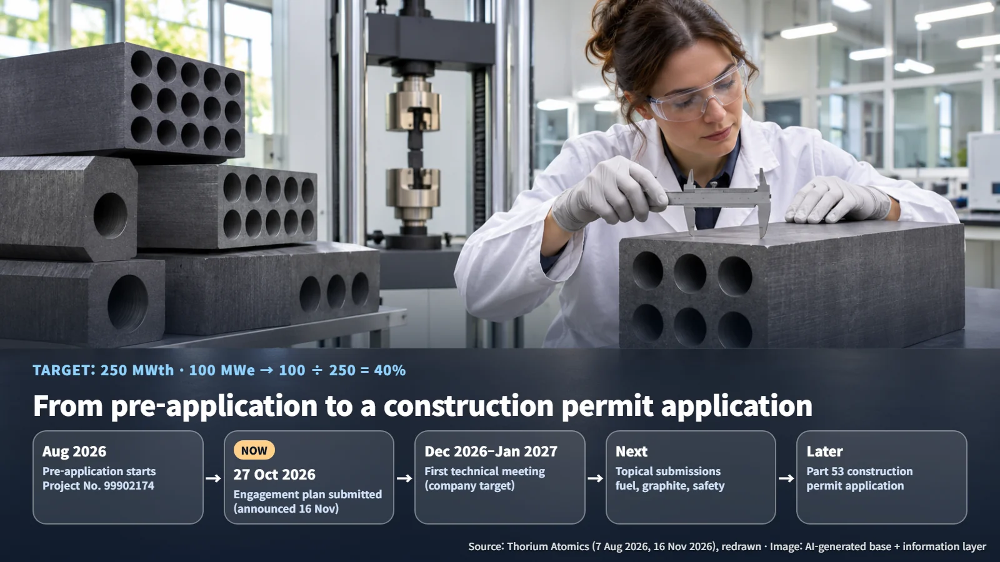
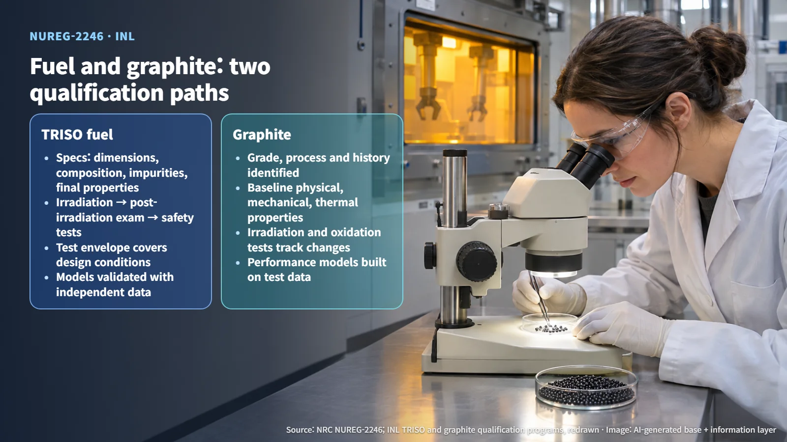

United States · NRC · Pre-application
What a Pebble-Bed Reactor Brings to the NRC First: Tesseract TGR's Engagement Plan and Fuel and Graphite Qualification
Thorium Atomics submitted the first edition of its Regulatory Engagement Plan for the Tesseract TGR on 27 October. Fuel and graphite qualification are among the technical topics it plans to bring to the NRC.
When a new reactor design makes the news, the first question most people ask is simple: when will it be built? Long before any construction, though, a reactor developer holds a long, structured conversation with its regulator. Thorium Atomics' latest announcement about the Tesseract TGR shows the opening stage of that conversation. This post walks through where the announcement sits in the U.S. licensing process, and how a developer proves that a new fuel and a new graphite are fit for service.

The Regulatory Engagement Plan Filed on October 27: Where Does It Stand?
On November 16, 2026, Thorium Atomics announced that it had submitted the initial pre-application Regulatory Engagement Plan (REP) for the Tesseract TGR. According to the company, the plan was actually filed on October 27, under document number ML26308A231. An engagement plan works much like a roadmap: before any formal application, it lays out which technical topics the developer intends to discuss with the U.S. Nuclear Regulatory Commission (NRC), and in what order.
Placed in sequence, the process so far looks like this:
1. Pre-application engagement begins (August 2026): In an August 7 announcement, the company said the NRC had assigned project number 99902174 and a point of contact. The project number is used to track correspondence, meetings, submittals and reviews. 2. Initial REP submitted (filed October 27, announced November 16) 3. First technical introduction meeting (company target: December 2026 or January 2027) 4. Construction permit application under 10 CFR Part 53: the next major gate the REP is designed to support. 5. NRC review
The Tesseract TGR is now at step 2, in the pre-application engagement stage, and the next milestone is the technical introduction meeting. Construction, licensing and independent verification all follow later in the sequence.

The design targets are worth a closer look. The Tesseract TGR is a pebble-bed high-temperature gas-cooled reactor concept intended to supply industrial heat and electricity, with targets of 250 MWth of thermal output and 100 MWe of electrical output. Dividing one target by the other gives a simple heat-to-electricity ratio: 100 MWe ÷ 250 MWth = 0.4, or about 40%. Because this figure compares two design targets, the actual efficiency will be established through design verification and testing as the project advances.
What Makes TRISO Fuel "Qualified": Manufacturing Specs, Performance Envelope and Independent Validation
The Tesseract TGR concept uses LEU+ TRISO fuel, enriched to below 10% uranium-235, together with thorium. TRISO (tri-structural isotropic) fuel surrounds a small fuel kernel with several coating layers that hold fission products inside the particle. The particles are embedded in a graphite matrix and formed into cylindrical compacts or spherical pebbles; a pebble-bed reactor uses the pebble form.
Fuel qualification is the process of building evidence that a fuel performs its required functions under defined conditions. The NRC's guidance document NUREG-2246 lays out an assessment framework that checks this evidence in three groups:
- Manufacturing characteristics: dimensions, composition, impurity limits and final material properties are set in a fabrication specification. The key link is showing that the test specimens represent the fuel that will actually be loaded into the reactor.
- Service conditions (the performance envelope): the range of temperature, pressure, power, radiation exposure and transient conditions over which the fuel must keep working. This envelope is the yardstick for judging whether testing and model validation cover the design's intended operating conditions.
- Evaluation models: models that predict fuel behavior are checked against independent data that were not used to build them. Experimental uncertainty, specimen representativeness, data-sparse regions and use of the model within the tested range are all examined together.
Idaho National Laboratory (INL) describes the testing pathway for TRISO as reactor irradiation testing, post-irradiation examination (PIE), and safety testing. Fuel is first exposed to radiation inside a test reactor; the irradiated fuel is then examined; finally, it is heated under accident-related high-temperature conditions to measure how well it retains fission products. A cooking analogy fits: a qualified fuel needs the recipe, the range of cooking temperatures, and a taste test carried out by someone other than the cook.
Why Graphite Gets Its Own Qualification: Grade, History and Oxidation
In a high-temperature gas-cooled reactor, graphite is the structural material that holds the fuel and slows down neutrons. INL explains that graphite performance depends on grade, manufacturing process and service history. Applying test data from one graphite to another grade or a different exposure condition therefore requires first confirming that properties, specimens and environments correspond.
Graphite qualification also proceeds in steps. It starts with baseline measurements of physical, mechanical and thermal properties right after manufacture. Irradiation testing and microstructural analysis then track how those properties change before and after exposure, and the resulting data, together with the underlying physical mechanisms, feed a performance model. Oxidation assessment adds the effects of short- and long-term exposure to oxidizing environments. Fuel testing and graphite testing run on separate, independent pathways.
Setting the two evidence structures side by side shows how they line up:
| Item | Fuel (TRISO) | Graphite | |---|---|---| | Starting point | Fabrication specification | Baseline properties (physical, mechanical, thermal) | | Exposure | Service and transient condition envelope | Irradiation and oxidation exposure, property changes | | Basis for prediction | Evaluation model validated with independent data | Model built on physical mechanisms and test data, plus history records |
(Source: adapted from NRC, NUREG-2246, and INL, TRISO Fuel Qualification and Graphite Qualification)
For both materials, the evidence comes down to two questions: does the tested range cover the range the reactor will actually use, and has the model been validated against independent data? For fuel, specimen representativeness carries much of that weight; for graphite, traceability of grade and service history does.

Technical Submittal Topics and What Comes Next
According to the company, the REP lists the following technical submittal topics: reactor physics, fuel and graphite qualification, principal design criteria, probabilistic and deterministic safety assessment, the accident source term (the amount and form of radioactive material that could be released in an accident), and the emergency planning zone. How well the fuel retains fission products under accident conditions is exactly what safety testing measures, so the fuel qualification evidence connects directly to the source term and safety assessment discussions.
The public information so far comes from company announcements. The Tesseract's actual test scope, acceptance values and any NRC feedback have not been made public. Three things are worth watching next: the actual date of the first technical introduction meeting, targeted for December 2026 or January 2027, along with any public NRC meeting records; how the fuel qualification and safety assessment methods are submitted and what the review finds; and the point at which pre-application engagement moves to a Part 53 construction permit application.
Progress on a new reactor shows up in its list of regulatory submittals well before it shows up in construction photos. The next time this reactor is in the news, one question will help gauge the weight of the update: does the tested range now cover the design's operating conditions?